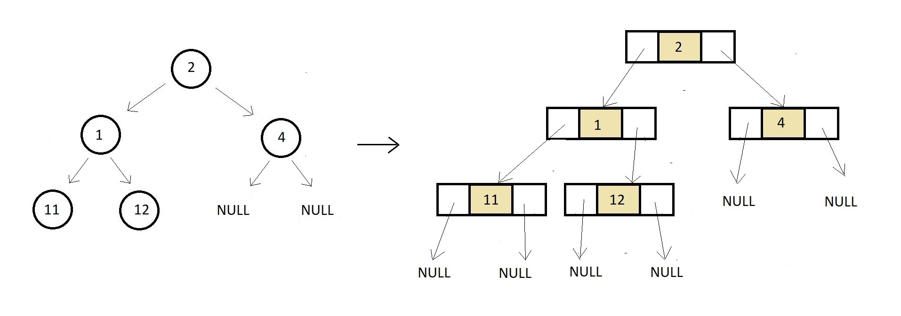

See how a tree looks in real life, and how efficiently the linked representation of a tree helps us visualize the same
First a node is created which stores data and two struct node pointers to store childrens
struct node{
int data;
struct node *left;
struct node *right;
}
Create a root node and assign to it the memory in heap.
struct node* createNode(int data){
struct node *n; // creating a node pointer
n = (struct node *) malloc(sizeof(struct node)); // Allocating memory in the heap
n->data = data; // Setting the data
n->left = NULL; // Setting the left and right children to NULL
n->right = NULL; // Setting the left and right children to NULL
return n; // Finally returning the created node
}
Create children node and link them with root nodes
struct node *p = createNode(2);
struct node *p1 = createNode(1);
struct node *p2 = createNode(4);
p->left = p1;
p->right = p2;